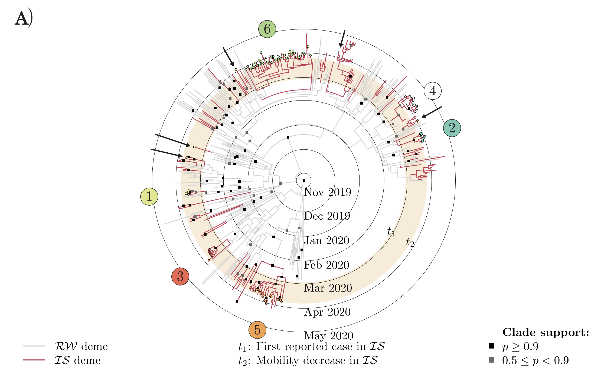
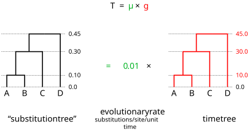
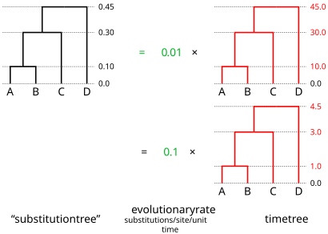
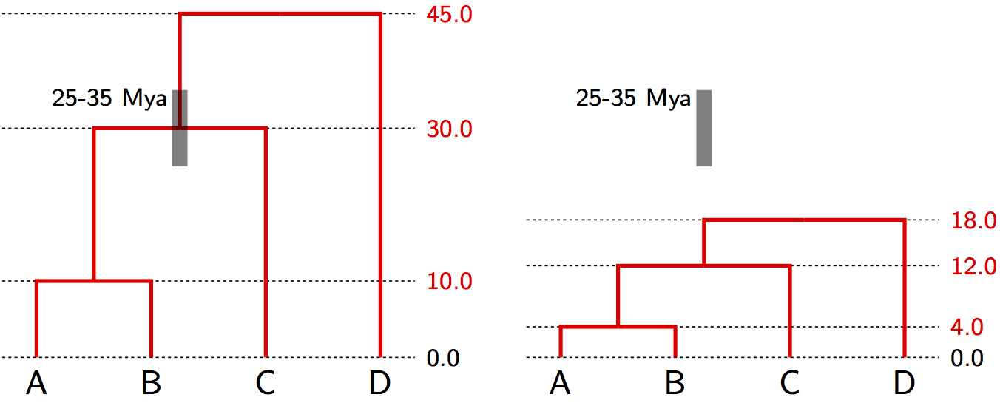
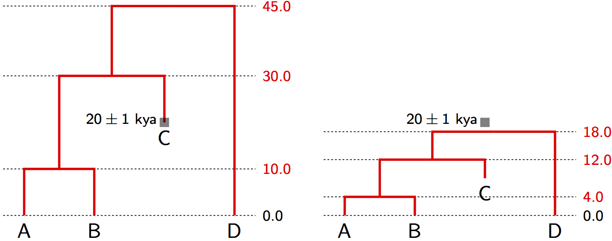
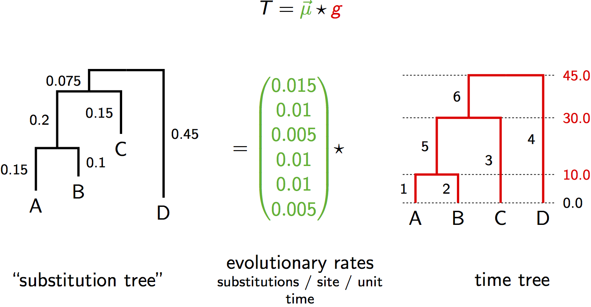
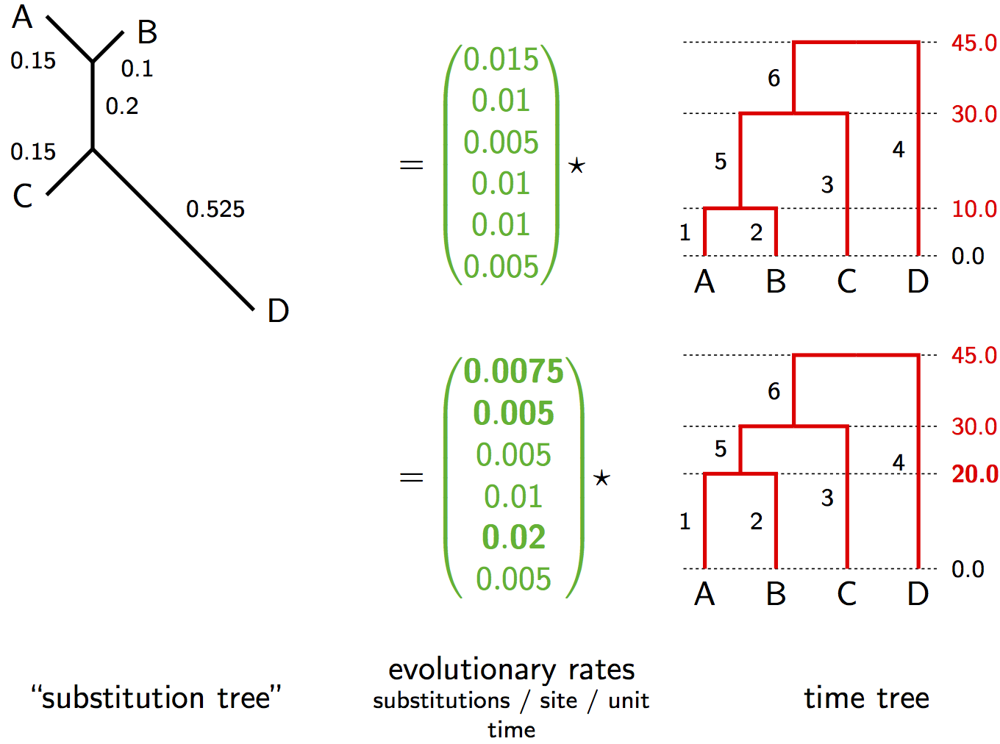

SARS-CoV-2 genomes from New Zealand's first COVID-19 wave.
Figure 4A of Douglas et al. (2021), Virus Evolution 7(2):veab052, CC BY
Today's question: what has to be true before a tree can carry a calendar axis at all?
$\color{red}{g}$ is the time tree: the tree whose branch lengths are
durations. This is the tree the tree prior $P(\color{red}{g}|\color{blue}{\Theta})$
acts on, and the one we have been drawing all along.
$T$ is the substitution tree: the same tree, but with branch lengths in
expected substitutions per site. This is the only tree the likelihood
$\Pr(D|T)$ can see.
$\color{darkgreen}{\mu}$ is the clock rate that converts one into the other.
The strict molecular clock parameterization

A single rate $\color{darkgreen}{\mu}$ stretches the time tree $\color{red}{g}$ into the substitution tree $T$. The likelihood only ever sees $T$.

A fast rate over a short time and a slow rate over a long time give the same genetic distances, so they have the same likelihood. No amount of extra sequence data separates them. We need information from outside the alignment.
Suppose fossil evidence shows the common ancestor of species A, B and C lived 25-35 Mya.

With a strict molecular clock, the age of a single node is enough to interpolate and extrapolate the ages of all the others. Once one node age calibrates the tree, the genetic distances separate into an absolute rate and divergence times.
Suppose sample C is ancient DNA from subfossil remains dated to 20 thousand years ago.

Calibration also works when the tips have different ages: ancient DNA, or virus samples collected on known dates. This is what dates the SARS-CoV-2 tree we started with. The genomes were sequenced over a few months, and the virus evolves fast enough for that spread of sampling dates to calibrate the clock on its own.
The relaxed molecular clock parameterization

Now every branch has its own rate, so $\color{darkgreen}{\vec{\mu}}$ is a vector rather than a single number. Lineages really do differ in generation time, mutation rate and selection, so this is usually the more realistic assumption.

With one rate per branch there are far more ways to reproduce the same genetic distances. The extra freedom is only pinned down by the priors: how much rate variation we say is plausible ($\color{darkgreen}{P(\vec{\mu})}$) and what shape of tree we say is plausible ($P(\color{red}{g}|\color{blue}{\Theta})$). Divergence dates from a relaxed clock are therefore genuinely sensitive to those priors, which is why they must be reported.
Each branch draws its rate independently from one distribution, usually a lognormal. Two sister lineages are no more alike than any other pair. This is the common default.
The rate evolves along the tree, so a branch tends to resemble its parent. Biologically appealing when rate shifts track inherited traits such as body size or generation time.
Strict molecular clock:
$$T = \color{darkgreen}{\mu} \times \color{red}{g}$$
$$P(\color{red}{g}, \color{darkgreen}{\mu}, \color{blue}{\Theta}|D) \propto \Pr(D|T)\;P(\color{red}{g}|\color{blue}{\Theta})\;\color{darkgreen}{P(\mu)}\;\color{blue}{P(\Theta)}$$
Relaxed molecular clock:
$$T = \color{darkgreen}{\vec{\mu}} \star \color{red}{g}$$
$$P(\color{red}{g}, \color{darkgreen}{\vec{\mu}},\color{blue}{\Theta}|D) \propto \Pr(D|T)\;P(\color{red}{g}|\color{blue}{\Theta})\;\color{darkgreen}{P(\vec{\mu})}\;\color{blue}{P(\Theta)}$$
Everything on that calendar axis now has a source:
Also recommended: